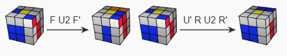

First two layers

The first two layers (F2L) of the Rubik's Cube are solved simultaneously rather than individually, reducing the solve time considerably. In the second step of the Fridrich method we solve the four white corner pieces and the middle layer edges attached to them. The 41 possible cases in this step can be solved intuitively but it's useful to have a table of algorithms printed on your desk for guidance.
To be efficient try not to turn your cube around while solving and look ahead as much as possible. Familiarize with the algorithms so you can do them even with your eyes closed.
In the beginner's method solving the white corners and the second layer edges were two separate steps, but in this stage you should already know this. In the advanced Fridrich method we're going to pair them in the top layer, then insert them where they belong. The simple example below demonstrates a lucky situation where the red-blue edge piece goes where it belongs while we solve the white corner. If the red-blue corner is somewhere else, then first we need to get it to the back-top position.
In the example below the white sticker is pointing upwards. First we have to put the corner and edge pieces together, and put them where they need to be.
We can never affect the solved blocks! In the situation below, instead of doing F U2 F' we are going to do U' R U2 R' so we don't mess up the blue-orange block.

To get faster sometimes we are going to use double turns. Just a reminder that the u letter in the algorithm means the rotation of the two upper layer clockwise.